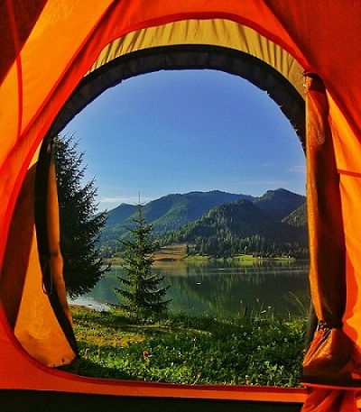

Preston Idaho
Weather Summary
Currently:
High:
Wind Chill:
Humidity:
Wind Speed:
Rainy
45 °F
°F
35%
6 mph
5 Day Forecast
| Monday | Tuesday | Wednesday | Thursday | Friday |
|---|---|---|---|---|
| 49 °F | 47 °F | 44 °F | 46 °F | 50 °F |
Article
Camping is an outdoor activity involving overnight stays away from home in a shelter, such as a tent or a
recreational vehicle. Typically participants leave developed areas to spend time outdoors in more
natural ones in pursuit of activities providing them enjoyment. The night (or more) spent outdoors
distinguishes camping from day-tripping, picnicking, and other similarly short-term recreational
activities.
Camping as a recreational activity became popular among elites in the early 20th century. With time, it
grew in popularity among other socioeconomic classes. Modern campers frequent publicly owned natural
resources such as national and state parks, wilderness areas, and commercial campgrounds.
https://en.wikipedia.org/wiki/Camping